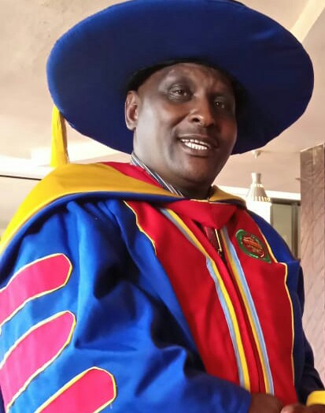

ABOUT KPCEO
The Kenya pastors and Christians empowerment organization [KPCEO] was founded and initiated by wilson Wamusosi Makuma,Mr. Joseph Wasike Mapesa,Pastor Festus Muthembwa Katava and Mrs. Lydia Wanjiku Kamande by the year 2019 and the organization was registered in the year of 2020/21st/October. The Kenya Pastors and Christians Empowerment Organization is the legal Organization that was registered in 2020 and is dedicated to empowering, imparting knowledge, skills, and awareness amongst the poorest vulnerable strata of the society with emphasis on supporting needy children, employment generation among youths and family couples and pastors, looking after poverty stricken, water harvesting, preventing health hazards, drug de-addiction, witness protection and awareness about environment and hygiene. We offer ours services 24/7 to help us achieve our goal.
Governance
The organization has a General Assembly of founding members and other members who have joined the association after its establishment to oversee and deal with all policy issues. It has a managing Board of Directors consisting eleven members of which six members are Board office bearers, and two are trustees. These members are to decide on major administrative matters and oversee major developments and guide its operations. There is a managing committee consisting department heads and chaired by General Secretary to deal and execute day-to-day administrative and managerial matters.
The General Secretary, responsible to the Board of Directors, is entrusted with the main task of overseeing and implementing decisions passed by the General Body and Board of Directors. He also manages the day-to-day activities and operations of the organization.
The organization has four major departments, which include Administration, Finance, Program and Public Relations departments and each department has three to five sections.
ADMINISTRATION OF KPCEO
BSP. DR.Joseph Mutua
Secretary general of KPCEO Administration